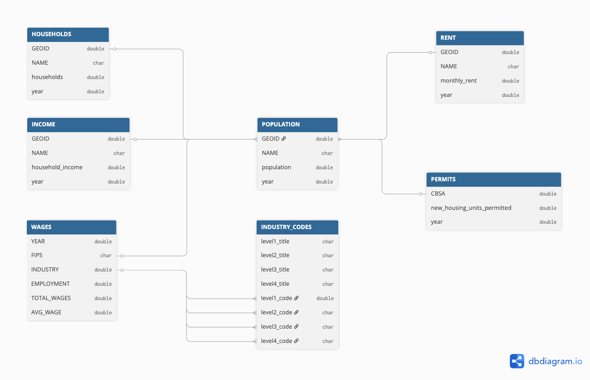
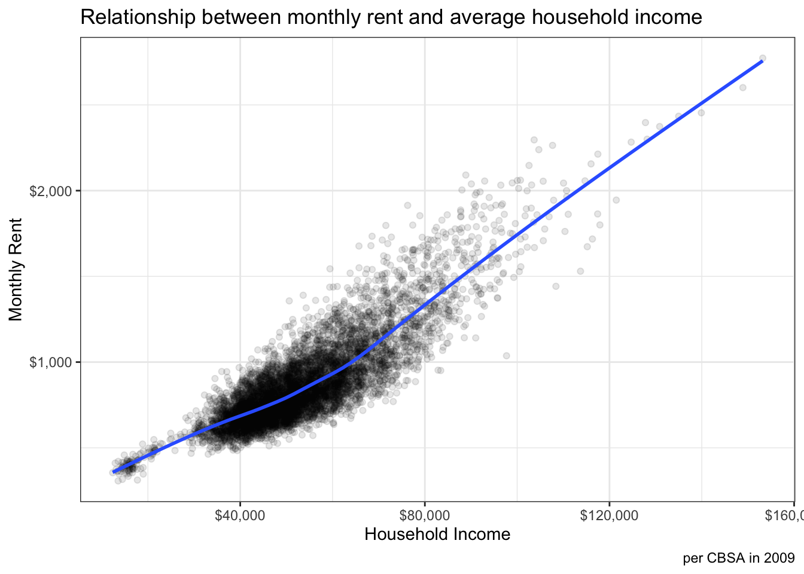
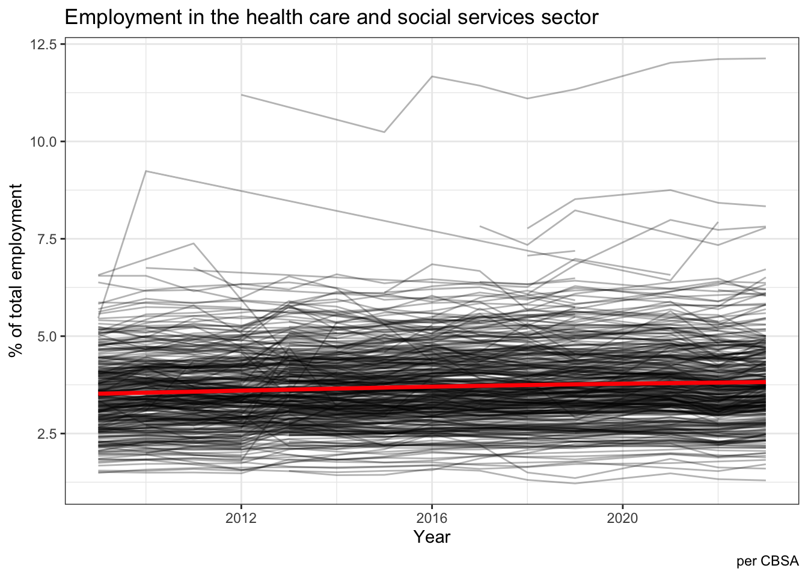
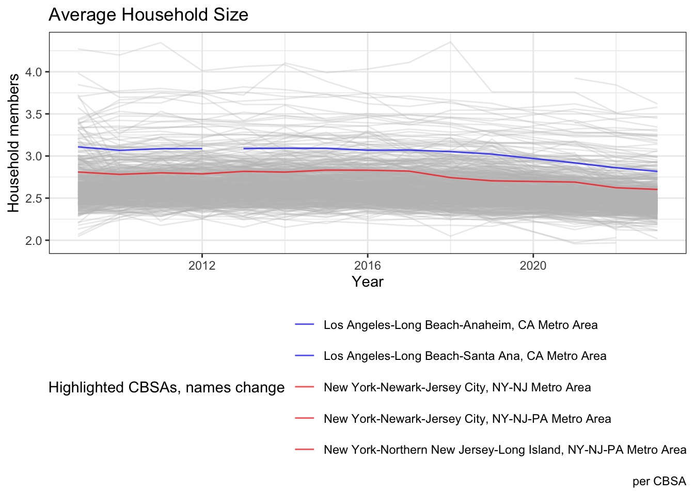
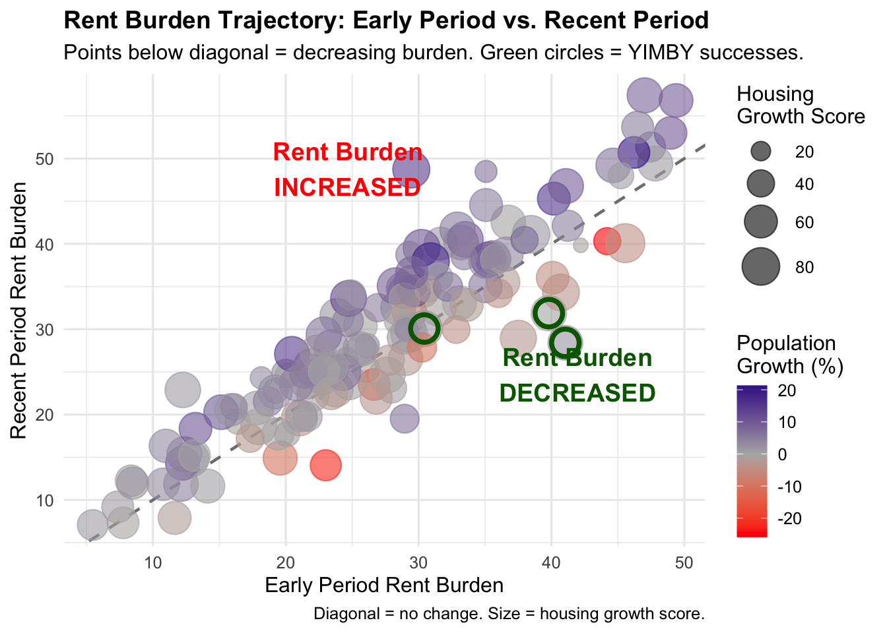
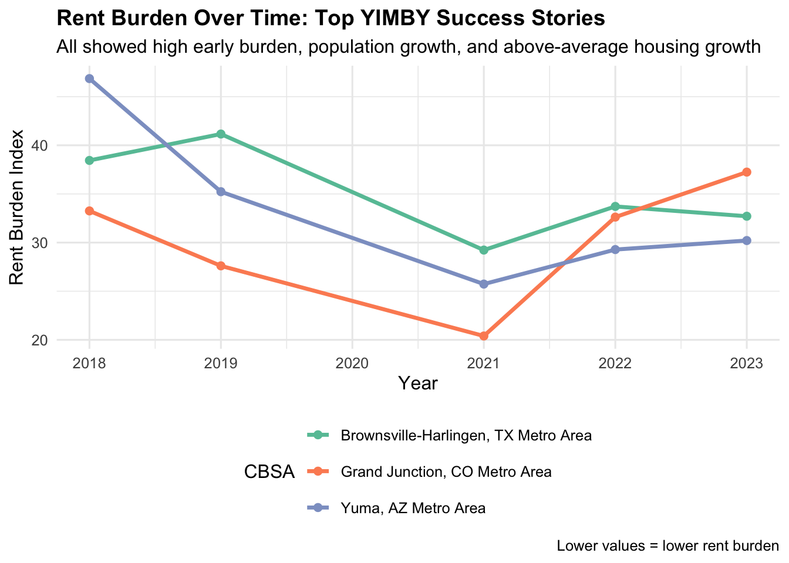

The rent burden in many cities has been rising recently and new housing units have not kept pace with demand. To address the shortfall, we, Habitat for the Future, have been working with congress to establish policies to alleviate this imbalance.
We are excited to be working with senators who understand this issue from two perspectives:
Our Senator from Merced, CA knows first-hand the challenges that a high rent burden places on both consumers and businesses
Our Senator from Yuma, AZ has seen the benefits of relieving a rent burden through housing growth
In Merced, CA, a significant part of the population works in Health Care and Food Manufacturing. In Yuma, AZ, Health Care and Agriculture account for a substantial portion of employment. The growth of our local industries depends on the availability of affordable housing for our workers. Expansion is nearly impossible without being able to attract the next generation of talent.
Our existing workers in these industries vote, and most are affiliated with the Health Care Workers Union or the Food Workers Union. This is an issue that means a great deal to these citizens and the organizations that are in their corner.
But how do we define a rent burden and how is it affecting different parts of the country?
We used a standardized score based on the rent-to-income ratio to identify the relative burden for each census tract and how it has changed over time.
We looked at housing growth by census tract relative to population and population growth.
We identified two kinds of places in particular:
where the rent burden remained high while building growth was slow.
where the rent burned eased while building growth was higher.
Your support can have a meaningful impact on the rent burden.
Task 1: Data Import
CODE: Get Census Bureau data
if(!dir.exists(file.path("data", "mp02"))){dir.create(file.path("data", "mp02"), showWarnings=FALSE, recursive=TRUE)}ensure_package <-function(pkg){ pkg <-as.character(substitute(pkg))options(repos =c(CRAN ="https://cloud.r-project.org"))if(!require(pkg, character.only=TRUE, quietly=TRUE)) install.packages(pkg)stopifnot(require(pkg, character.only=TRUE, quietly=TRUE))}ensure_package(tidyverse)ensure_package(glue)ensure_package(readxl)ensure_package(tidycensus)get_acs_all_years <-function(variable, geography="cbsa",start_year=2009, end_year=2023){ fname <-glue("{variable}_{geography}_{start_year}_{end_year}.csv") fname <-file.path("data", "mp02", fname)if(!file.exists(fname)){ YEARS <-seq(start_year, end_year) YEARS <- YEARS[YEARS !=2020] # Drop 2020 - No survey (covid) ALL_DATA <-map(YEARS, function(yy){ tidycensus::get_acs(geography, variable, year=yy, survey="acs1") |>mutate(year=yy) |>select(-moe, -variable) |>rename(!!variable := estimate) }) |>bind_rows()write_csv(ALL_DATA, fname) }read_csv(fname, show_col_types=FALSE)}# Household income (12 month)INCOME <-get_acs_all_years("B19013_001") |>rename(household_income = B19013_001)# Monthly rentRENT <-get_acs_all_years("B25064_001") |>rename(monthly_rent = B25064_001)# Total populationPOPULATION <-get_acs_all_years("B01003_001") |>rename(population = B01003_001)# Total number of householdsHOUSEHOLDS <-get_acs_all_years("B11001_001") |>rename(households = B11001_001)
CODE: Get BLS Quarterly census of wages and employment
ensure_package(httr2)ensure_package(rvest)get_bls_qcew_annual_averages <-function(start_year=2009, end_year=2023){ fname <-glue("bls_qcew_{start_year}_{end_year}.csv.gz") fname <-file.path("data", "mp02", fname) YEARS <-seq(start_year, end_year) YEARS <- YEARS[YEARS !=2020] # Drop Covid year to match ACSif(!file.exists(fname)){ ALL_DATA <-map(YEARS, .progress=TRUE, possibly(function(yy){ fname_inner <-file.path("data", "mp02", glue("{yy}_qcew_annual_singlefile.zip"))if(!file.exists(fname_inner)){request("https://www.bls.gov") |>req_url_path("cew", "data", "files", yy, "csv",glue("{yy}_annual_singlefile.zip")) |>req_headers(`User-Agent`="Mozilla/5.0 (Macintosh; Intel Mac OS X 10.15; rv:143.0) Gecko/20100101 Firefox/143.0") |>req_retry(max_tries=5) |>req_perform(fname_inner) }if(file.info(fname_inner)$size <755e5){warning(sQuote(fname_inner), "appears corrupted. Please delete and retry this step.") }read_csv(fname_inner, show_col_types=FALSE) |>mutate(YEAR = yy) |>select(area_fips, industry_code, annual_avg_emplvl, total_annual_wages, YEAR) |>filter(nchar(industry_code) <=5, str_starts(area_fips, "C")) |>filter(str_detect(industry_code, "-", negate=TRUE)) |>mutate(FIPS = area_fips, INDUSTRY =as.integer(industry_code), EMPLOYMENT =as.integer(annual_avg_emplvl), TOTAL_WAGES = total_annual_wages) |>select(-area_fips, -industry_code, -annual_avg_emplvl, -total_annual_wages) |># 10 is a special value: "all industries" , so omitfilter(INDUSTRY !=10) |>mutate(AVG_WAGE = TOTAL_WAGES / EMPLOYMENT) })) |>bind_rows()write_csv(ALL_DATA, fname) } ALL_DATA <-read_csv(fname, show_col_types=FALSE) ALL_DATA_YEARS <-unique(ALL_DATA$YEAR) YEARS_DIFF <-setdiff(YEARS, ALL_DATA_YEARS)if(length(YEARS_DIFF) >0){stop("Download failed for the following years: ", YEARS_DIFF, ". Please delete intermediate files and try again.") } ALL_DATA}WAGES <-get_bls_qcew_annual_averages()
To define the problem of rent burdens and the effect of housing growth on metro areas across the United States, we examined data from the Census Bureau and the Bureau of Labor and Statistics. The data is available to the public and can be accesses through a schema as indicated in the diagram below.

Task 2: Multi-Table Questions
Which CBSA (by name) permitted the largest number of new housing units in the decade from 2010 to 2019 (inclusive)?
CODE: Find largest number of permits
# Get distinct GEOIDs and Names to avoid many-to-many dataPOPULATION_names <- POPULATION |>select(GEOID, NAME) |>distinct(GEOID, .keep_all =TRUE)# Join POPULATION and PERMITS dataframes to find the metro with the largest number of permits by namelargest_number_permits <-inner_join(POPULATION_names, PERMITS, join_by(GEOID==CBSA)) |>filter(year >=2010, year <=2019) |>group_by(NAME) |>summarize(total_new_housing_units_permitted =sum(new_housing_units_permitted)) |>arrange(desc(total_new_housing_units_permitted)) |>slice_max(total_new_housing_units_permitted, n=1)
Houston-Sugar Land-Baytown, TX Metro Area permitted the largest number of new housing units in the decade from 2010 to 2019 (inclusive): 482,075.
Question 2: In what year did Albuquerque, NM permit the most new housing units?
The Hint is that there is a Covid-19 data artifact here, and it looks as though the 2021 data is roughly double the values for the adjacent years. In some of the other tables, 2020 data is not available. It was in the PERMITS table, but perhaps the 2020 data was double counted (added into the 2021 numbers?)
CODE: Find year of most new housing units in Albuquerque
# Use POPULATION_Names again in the joinmost_new_albuquerque <-inner_join(POPULATION_names, PERMITS, join_by(GEOID==CBSA)) |>filter(GEOID ==10740) |>arrange(desc(new_housing_units_permitted)) |>slice_max(new_housing_units_permitted, n=1)# Filter for years 2020-2022 to help unpack the confusion with the yearsalbuquerque_permits <-inner_join(POPULATION_names, PERMITS, join_by(GEOID==CBSA)) |>filter(GEOID ==10740, year %in%c(2020, 2021, 2022)) |>arrange(year)# Extract values for each yearpermits_2020 <- albuquerque_permits |>filter(year ==2020)permits_2021 <- albuquerque_permits |>filter(year ==2021)permits_2022 <- albuquerque_permits |>filter(year ==2022)# Calculate the difference between 2021 and 2020 based on theory that 2020 values have been double counteddiff_2021_2020 <- permits_2021$new_housing_units_permitted - permits_2020$new_housing_units_permitted
At first glance, Albuquerque, NM Metro Area posted the most new housing units in 2021: 4,021.
However, if we subtract the number of housing units in 2020, assuming they were double-counted, there were only 2,007 in 2021.
That means Albuquerque, NM Metro Area likely posted the most new housing units in 2022: 2,852.
Question 3: Which state (not CBSA) had the highest average individual income in 2015?
To answer this question, you will need to first compute the total income per CBSA by multiplying the average household income by the number of households, and then sum total income and total population across all CBSAs in a state. With these numbers, you can answer this question.
District of Columbia had the highest income in 2015 at $33,232.88.
Question 4: What is the last year in which the NYC CBSA had the most data scientists in the country?
CODE: Find the last year that NYC CBSA had the most data scientists
# get NYC cbsa codenew_york_cbsa <- POPULATION |>filter(grepl("New York", NAME)) |>group_by(GEOID) |>select(GEOID, NAME) |>distinct(GEOID, .keep_all =TRUE) |>pull(GEOID)# standardize cbsa codes across census and bls dataPOPULATION_codes <- POPULATION |>mutate(std_cbsa =paste0("C", GEOID))WAGES_codes <- WAGES |>filter(INDUSTRY ==5182) |>mutate(std_cbsa =paste0(FIPS, "0"))# join census and bls tables and find answernyc_top <-inner_join(POPULATION_codes, WAGES_codes, join_by(std_cbsa == std_cbsa, year == YEAR)) |>group_by(year) |>arrange(desc(EMPLOYMENT)) |>slice(1) |>ungroup() |>filter(GEOID == new_york_cbsa) |>arrange(desc(year)) |>slice(1) |>select(year, EMPLOYMENT)
New York City last had the most Data Scientists in the country in 2015 when 18,922 were employed.
Question 5: What fraction of total wages in the NYC CBSA was earned by people employed in the finance and insurance industries (NAICS code 52)? In what year did this fraction peak?
CODE: Find the fraction of wages in the NYC CBSA earned by people employed in the Finance and insurance industries
# Get NYC data from POPULATION and WAGES tablesPOPULATION_codes_nyc <- POPULATION |>filter(GEOID == new_york_cbsa) |>mutate(std_cbsa =paste0("C", new_york_cbsa))WAGES_codes_nyc <- WAGES |>mutate(std_cbsa =paste0(FIPS, "0"))# Identify which 2-digit prefixes exist first, work through hierarchyaggregated_codes <-inner_join(POPULATION_codes_nyc, WAGES_codes_nyc, join_by(std_cbsa == std_cbsa, year == YEAR)) |>mutate(industry_char =as.character(INDUSTRY)) |>filter(TOTAL_WAGES >0) |>mutate(level =nchar(industry_char),prefix_2 =str_sub(industry_char, 1, 2) ) |>group_by(year, prefix_2) |>slice_min(level, n =1, with_ties =FALSE) |># Keep shortest code for each prefixungroup()total_nyc_wages <- aggregated_codes |>group_by(year) |>summarize(nyc_wages =sum(TOTAL_WAGES, na.rm =TRUE))# find wages for finance industry in NYCtotal_nyc_finance_wages <-inner_join(POPULATION_codes_nyc, WAGES_codes_nyc, join_by(std_cbsa == std_cbsa, year == YEAR)) |>filter(INDUSTRY ==52) |>group_by(year) |>select(std_cbsa, year, INDUSTRY, TOTAL_WAGES)# find overall fractionoverall_fraction <-inner_join(total_nyc_wages, total_nyc_finance_wages, join_by(year == year)) |>summarize(nyc_wages_over_time =sum(nyc_wages), TOTAL_WAGES_OVER_TIME =sum(TOTAL_WAGES)) |>mutate(finance_fraction = TOTAL_WAGES_OVER_TIME/nyc_wages_over_time) |>arrange(desc(finance_fraction))# find peak yearpeak_year <-inner_join(total_nyc_wages, total_nyc_finance_wages, join_by(year == year)) |>mutate(finance_fraction = TOTAL_WAGES/nyc_wages) |>arrange(desc(finance_fraction)) |>slice_max(finance_fraction, n=1)
The overall fraction of wages earned in the NYC CBSA by people employed in the finance and insurance industries is 22.3%. The peak fraction annually was 26.9% in 2014.
Task 3: Initial Visualizations
CODE: Monthly rent and household income
library(ggplot2)library(scales)# The relationship between monthly rent and average household income per CBSA in 2009.rent_and_income <-inner_join(RENT, INCOME, join_by(GEOID == GEOID, NAME == NAME, year == year))# plot itggplot(rent_and_income, aes(x=household_income, y=monthly_rent)) +geom_point(alpha=0.1) +xlab("Household Income") +ylab("Monthly Rent") +labs(title="Relationship between monthly rent and average household income", caption="per CBSA in 2009") +theme_bw() +stat_smooth(se=FALSE) +scale_x_continuous(labels =label_dollar()) +scale_y_continuous(labels =label_dollar())

CODE: Employment in healthcare
# Get total employment by FIPS/CBSAemployment_by_fips <- WAGES |>group_by(YEAR, FIPS) |>summarize(FIPS_employment =sum(EMPLOYMENT), na.rm =TRUE, .groups ="drop") |>ungroup()# Get healthcare employment by FIPS / CBSAhealthcare_employment <- WAGES |>filter(INDUSTRY ==62) |>group_by(YEAR, FIPS) |>summarize(FIPS_healthcare_employment =sum(EMPLOYMENT), na.rm =TRUE, .groups ="drop") |>ungroup()# join these values and create a ratio of healthcare employment to total employmentemployment_for_plot <-inner_join(employment_by_fips, healthcare_employment, join_by(YEAR == YEAR, FIPS == FIPS)) |>mutate(health_pct = FIPS_healthcare_employment / FIPS_employment *100)# plot it# employment_for_plot |>filter(health_pct >0) |>#filter zero valuesggplot(aes(x = YEAR, y = health_pct, group = FIPS)) +geom_line(alpha =0.3) +xlab("Year") +ylab("% of total employment") +labs(title ="Employment in the health care and social services sector", caption ="per CBSA") +theme_bw() +stat_smooth(aes(group =1), se =FALSE, color ="red", linewidth =1.2)

CODE: household size
ensure_package("gghighlight")library(gghighlight)# find averages by joining HOUSEHOLDS and POPULATIONhouseholds_evolution <-inner_join(HOUSEHOLDS, POPULATION, join_by(GEOID == GEOID, NAME == NAME, year == year)) |>mutate(avg_household_size = population/households)# Create a vector of specific CBSA names or GEOIDs for New York and Los Angeleshighlight_cbsas <-c(35620, 31080, 31100)households_evolution |>ggplot(aes(x = year, y = avg_household_size, group = GEOID, color = NAME)) +geom_line(alpha =0.7) +gghighlight(GEOID %in% highlight_cbsas, label_key = NAME,unhighlighted_params =list(alpha =0.3),use_direct_label =FALSE) +scale_color_manual(values =c("blue", "blue", "red", "red", "red"),name ="Highlighted CBSAs, names change") +xlab("Year") +ylab("Household members") +labs(title ="Average Household Size", caption ="per CBSA") +theme_bw() +theme(legend.position ="bottom") +guides(color =guide_legend(ncol =1))

Task 4: Rent Burden
To look at the rent burden in metro areas across the United States, we can look at a simple rent-to-income ratio or an index. We will use an index that is scaled from 0 to 100, where 0 is the lowest rent burden in the nation and 100 is the highest. First we will look at the rent burden in New York over time, and then we will look for the metro areas with the top and bottom rent burdens in 2023, the most recent year that we have data for.
CODE: find rent burden in New York
rent_burden_data <-inner_join(INCOME, RENT, join_by(GEOID, NAME, year)) |>mutate(rent_to_income_pct = (monthly_rent *12/ household_income) *100) |>mutate(rent_burden_index = (rent_to_income_pct -min(rent_to_income_pct, na.rm =TRUE)) / (max(rent_to_income_pct, na.rm =TRUE) -min(rent_to_income_pct, na.rm =TRUE)) *100 )# Show both the actual ratio and the index#rent_burden_data |># select(NAME, year, rent_to_income_pct, rent_burden_index) |># arrange(desc(rent_burden_index))# use DT library for formatting tablesif(!require("DT")) install.packages("DT")library(DT)library(stringr)# improve the appearance of titles in tablesformat_titles <-function(df){colnames(df) <-str_replace_all(colnames(df), "_", " ") |>str_to_title() df}#Rent Burden in New Yorkrent_burden_data |>select(NAME, year, rent_to_income_pct, rent_burden_index) |>filter(str_detect(NAME, "New York")) |># LIKE filterarrange(year) |>format_titles() |>datatable(options =list(searching =FALSE,paging =FALSE,info =FALSE,ordering =FALSE) ) |>formatRound(c('Rent To Income Pct', 'Rent Burden Index'), digits =2)
To look at housing growth in metro areas across the United States, we can score metro areas based on how many new housing units are permitted relative to both the current number of residents and the overall population growth of that metro during the previous 5 years. To arrive at a useful score, we can break it down into three steps:
Instant score: look only at the current year’s population vs. permits
Rate-based score: look at the 5-year change in population vs. permits
Composite score: 5-year rolling average of the previous two scores
CODE: Housing Growth
# Join and prepare datahousing_metrics <-inner_join(POPULATION, PERMITS, join_by(GEOID == CBSA, year == year)) %>%arrange(GEOID, year) %>%group_by(GEOID) %>%mutate(# 5-year lagged populationpop_5yr_ago =lag(population, n =5),pop_change_5yr = population - pop_5yr_ago ) %>%ungroup() %>%# 1. Instant Scoremutate(# Annual permits per capitapermits_per_1000 = (new_housing_units_permitted / population) *1000 ) %>%# 2. Rate-based Scoremutate(# Annual permit rateannual_permit_rate = (new_housing_units_permitted / population) *1000,# Annualized population growth rate (CAGR over 5 years)annual_pop_growth_rate =case_when(is.na(pop_5yr_ago) | pop_5yr_ago ==0~NA_real_,TRUE~ ((population / pop_5yr_ago)^(1/5) -1) *100 ),# Housing adequacy: how well permits keep pace with population growthhousing_adequacy =case_when(is.na(annual_pop_growth_rate) | annual_pop_growth_rate <=0~NA_real_,TRUE~ annual_permit_rate / (annual_pop_growth_rate *10) ) ) %>%# Standardization# Create percentile scores within each yeargroup_by(year) %>%mutate(instant_score =percent_rank(permits_per_1000) *100,rate_score =percent_rank(housing_adequacy) *100 ) %>%ungroup() %>%# Composite Score (annual)filter(!is.na(instant_score), !is.na(rate_score)) %>%mutate(composite_score_annual = (instant_score + rate_score) /2 ) %>%# === Rolling 5-year average of composite scorearrange(GEOID, year) %>%group_by(GEOID) %>%mutate(composite_score = (composite_score_annual +lag(composite_score_annual, 1) +lag(composite_score_annual, 2) +lag(composite_score_annual, 3) +lag(composite_score_annual, 4)) /5 ) %>%ungroup()# === GENERATE TABLES ===# Get most recent yearrecent_year <- housing_metrics %>%filter(!is.na(composite_score)) %>%pull(year) %>%max()# Top 5 metros - Instant scoretop_instant <- housing_metrics %>%filter(year == recent_year) %>%arrange(desc(instant_score)) %>%select(GEOID, NAME, year, population, new_housing_units_permitted, permits_per_1000, instant_score) %>%head(5)# Bottom 5 metros - Instant scorebottom_instant <- housing_metrics %>%filter(year == recent_year) %>%arrange(instant_score) %>%select(GEOID, NAME, year, population, new_housing_units_permitted, permits_per_1000, instant_score) %>%head(5)# Top 5 metros - Rate-based (using annual scores)top_rate <- housing_metrics %>%filter(year == recent_year) %>%arrange(desc(rate_score)) %>%select(GEOID, NAME, year, population, pop_change_5yr, annual_permit_rate, annual_pop_growth_rate, housing_adequacy, rate_score) %>%head(5)# Bottom 5 metros - Rate-basedbottom_rate <- housing_metrics %>%filter(year == recent_year) %>%arrange(rate_score) %>%select(GEOID, NAME, year, population, pop_change_5yr, annual_permit_rate, annual_pop_growth_rate, housing_adequacy, rate_score) %>%head(5)# Top 5 metros - Composite (using 5-year rolling average)top_composite <- housing_metrics %>%filter(year == recent_year, !is.na(composite_score)) %>%arrange(desc(composite_score)) %>%select(GEOID, NAME, year, population, instant_score, rate_score, composite_score) %>%head(5)# Bottom 5 metros - Composite (using 5-year rolling average)bottom_composite <- housing_metrics %>%filter(year == recent_year, !is.na(composite_score)) %>%arrange(composite_score) %>%select(GEOID, NAME, year, population, instant_score, rate_score, composite_score) %>%head(5)
CODE: 1. Top 5 - Instant score
top_instant |>format_titles() |>datatable(options =list(searching =FALSE,paging =FALSE,info =FALSE,ordering =FALSE) ) |>formatRound(c('Population', 'New Housing Units Permitted'), digits =0, mark =",") |>formatRound(c('Permits Per 1000', 'Instant Score'), digits =2)
Let’s take a look at the relationship between rent burden (using the Rent Burden Index) and housing growth (using the composite score). This can help us to identify the differences in the way that metros are meeting the challenge of rent burden (or not). We will use the terms NIMBY (Not In My BackYard) and YIMBY (Yes In My BackYard) to represent metros that are less willing or more willing to build housing to ease the rent burden.
CODE: YIMBY Successes
all_burden <- rent_burden_data |>arrange(rent_burden_index) |>select(GEOID, year, rent_burden_index)all_composite <- housing_metrics %>%filter(!is.na(composite_score)) %>%arrange(desc(composite_score)) %>%select(GEOID, NAME, year, population, composite_score)# join the datacombined_data <-inner_join(all_burden, all_composite, join_by(GEOID == GEOID, year == year))# YIMBY Metrics for each CBSAyimby_analysis <- combined_data %>%group_by(GEOID, NAME) %>%summarize(# Early period rent burden (first 3 years with data)early_rent_burden =mean(rent_burden_index[year <=min(year) +2], na.rm =TRUE),# Recent rent burden (last 3 years with data)recent_rent_burden =mean(rent_burden_index[year >=max(year) -2], na.rm =TRUE),# Change in rent burdenrent_burden_change = recent_rent_burden - early_rent_burden,# Population metricsearly_population =first(population[!is.na(population)]),recent_population =last(population[!is.na(population)]),pop_growth_pct = ((recent_population - early_population) / early_population) *100,# Housing growth (average composite score over study period)avg_composite_score =mean(composite_score, na.rm =TRUE),# Study periodmin_year =min(year),max_year =max(year),n_years =n_distinct(year),.groups ='drop' ) %>%# Filter for CBSAs with sufficient datafilter(!is.na(early_rent_burden), !is.na(recent_rent_burden),!is.na(avg_composite_score), n_years >=5) # At least 5 years of data# Calculate thresholdsmedian_composite <-median(yimby_analysis$avg_composite_score, na.rm =TRUE)median_early_burden <-median(yimby_analysis$early_rent_burden, na.rm =TRUE)# Identify YIMBY success CBSAs ===yimby_successes <- yimby_analysis %>%filter( early_rent_burden >= median_early_burden, # High early burden rent_burden_change <0, # Decreasing burden pop_growth_pct >0, # Population growth avg_composite_score > median_composite # Above-avg housing growth ) %>%arrange(desc(avg_composite_score))#cat("\n=== YIMBY SUCCESS STORIES ===\n")#cat(paste("Found", nrow(yimby_successes), "CBSAs meeting all criteria\n\n"))# print(yimby_successes %>% # select(NAME, early_rent_burden, rent_burden_change, # pop_growth_pct, avg_composite_score) %>%# head(15))yimby_successes |>select(NAME, early_rent_burden, rent_burden_change, pop_growth_pct, avg_composite_score) |>format_titles() |>datatable(options =list(searching =FALSE,paging =FALSE,info =FALSE,ordering =FALSE) ) |>formatRound(c('Early Rent Burden', 'Rent Burden Change', 'Pop Growth Pct', 'Avg Composite Score'), digits =2)
CODE: Early vs Recent Rent Burden (with trajectories)
plot3 <-ggplot(yimby_analysis,aes(x = early_rent_burden,y = recent_rent_burden)) +geom_abline(slope =1, intercept =0, linetype ="dashed", color ="gray50", linewidth =0.8) +geom_point(aes(size = avg_composite_score, color = pop_growth_pct), alpha =0.6) +# Highlight YIMBY successesgeom_point(data = yimby_successes,aes(x = early_rent_burden, y = recent_rent_burden),color ="darkgreen",size =6,shape =1,stroke =2,inherit.aes =FALSE) +scale_color_gradient2(low ="red", mid ="gray70", high ="darkblue",midpoint =0,name ="Population\nGrowth (%)") +scale_size_continuous(name ="Housing\nGrowth Score", range =c(1, 10)) +annotate("text", x =max(yimby_analysis$early_rent_burden, na.rm =TRUE) *0.85,y =max(yimby_analysis$early_rent_burden, na.rm =TRUE) *0.5,label ="Rent Burden\nDECREASED",color ="darkgreen", fontface ="bold", size =5) +annotate("text", x =max(yimby_analysis$early_rent_burden, na.rm =TRUE) *0.5,y =max(yimby_analysis$recent_rent_burden, na.rm =TRUE) *0.85,label ="Rent Burden\nINCREASED",color ="red", fontface ="bold", size =5) +labs(title ="Rent Burden Trajectory: Early Period vs. Recent Period",subtitle ="Points below diagonal = decreasing burden. Green circles = YIMBY successes.",x ="Early Period Rent Burden",y ="Recent Period Rent Burden",caption ="Diagonal = no change. Size = housing growth score." ) +theme_minimal(base_size =12) +theme(plot.title =element_text(face ="bold", size =14),legend.position ="right")print(plot3)

CODE: Time Series for Top YIMBY Successes
# === VISUALIZATION 4: Time Series for Top YIMBY Successes ===# Get top 6 YIMBY success storiestop_yimby_names <- yimby_successes %>%head(6) %>%pull(NAME)plot4 <- combined_data %>%filter(NAME %in% top_yimby_names) %>%ggplot(aes(x = year, y = rent_burden_index, color = NAME)) +geom_line(linewidth =1.2) +geom_point(size =2) +scale_color_brewer(palette ="Set2", name ="CBSA") +labs(title ="Rent Burden Over Time: Top YIMBY Success Stories",subtitle ="All showed high early burden, population growth, and above-average housing growth",x ="Year",y ="Rent Burden Index",caption ="Lower values = lower rent burden" ) +theme_minimal(base_size =12) +theme(plot.title =element_text(face ="bold", size =14),legend.position ="bottom") +guides(color =guide_legend(ncol =1))print(plot4)

Task 7, continued: Policy Brief
To write the policy brief, two metros were selected as examples of YIMBY and NIMBY metros. Yuma, AZ was used as the YIMBY case and Merced, CA as the NIMBY case.